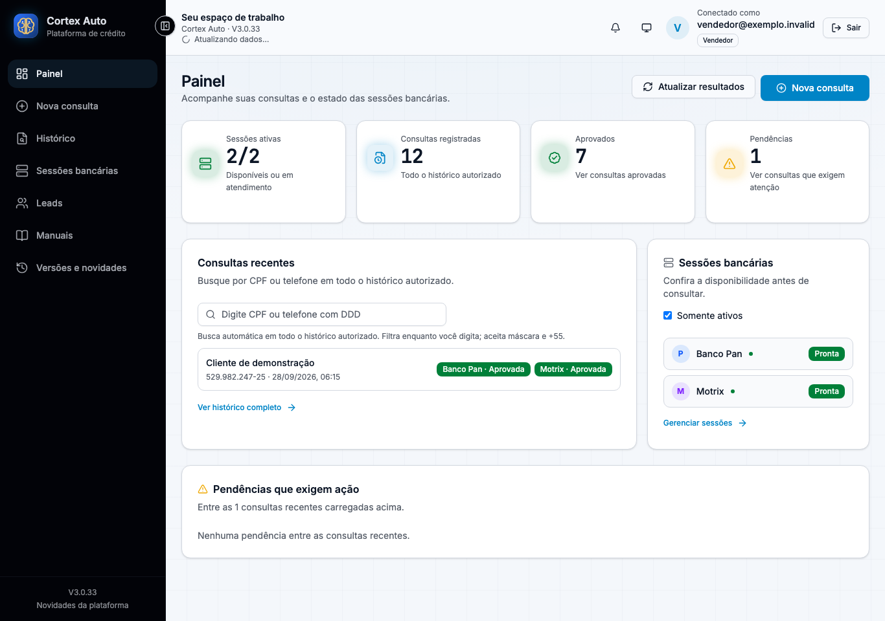

Cadastro único
Dados do cliente e condições do veículo entram uma vez. Integrações de endereço e FIPE apoiam o preenchimento, preservando alterações manuais.
ENGENHARIA APLICADA À OPERAÇÃO COMERCIAL
Cortex Auto reúne cadastro, consultas e retornos de financiamento em uma plataforma. Automação de navegador, assistência de IA e intervenção humana trabalham juntas para organizar a jornada do vendedor.

O PROBLEMA QUE O PROJETO RESOLVE
Quem vende precisa acompanhar o cliente, o veículo e o retorno de cada banco. A plataforma concentra esse contexto e mantém as regras de cada integração.
Dados do cliente e condições do veículo entram uma vez. Integrações de endereço e FIPE apoiam o preenchimento, preservando alterações manuais.
Workers separados por banco, filas e terminal remoto na VPS. O vendedor pode intervir quando a autenticação ou o portal exigem sua participação.
Estados, propostas, histórico e evidências permitem acompanhar o que aconteceu. A decisão de crédito continua pertencendo ao banco.
A PLATAFORMA EM USO
Interface real capturada com dados sintéticos e APIs simuladas. Clique em uma tela para ampliar.
As imagens não contêm dados reais de clientes. Retornos simulados não representam aprovação de crédito nem validam todos os cenários dos portais.
AUTOMAÇÃO COM CRITÉRIO
O robô traz execução previsível. A IA ajuda a interpretar ambiguidades. A validação limita as sugestões, e a pessoa atua quando o fluxo precisa de conferência.
Executa etapas conhecidas com Playwright: sessão, campos, opções e leitura do portal. Cada banco tem seu adapter e seus contratos.
Propõe interpretação de telas, correspondência entre opções e recuperação. A proposta passa por validação antes de ser utilizada.
O vendedor confirma dados e usa o VNC para situações de autenticação, CAPTCHA ou revisão. O navegador bancário permanece na VPS.
PROJETO PREPARADO PARA EVOLUIR
Documentação, testes, versionamento e infraestrutura definida em código ajudam a revisar mudanças e reproduzir o ambiente.
GitFlow e Coolify ↗Testes backend e frontend, TypeScript, lint, navegador e build.
Histórico de melhorias, manuais e promoção do commit aprovado para staging.
Deploy dos workers é adiado se houver sessões abertas ou operações pendentes. Produção tem fluxo separado.
AUTOR DO PROJETO
Concepção e condução do Cortex Auto. Um projeto de engenharia de software orientado às necessidades reais de atendimento, integração e operação de financiamento.
Perfil no GitHub ↗Cooperação técnica: Codex e Claude, ferramentas de assistência ao desenvolvimento. Créditos na documentação; identidade Cortex Auto na aplicação.
CONHEÇA O PROJETO POR DENTRO
Explore o código, o manual e o modelo de implementação.